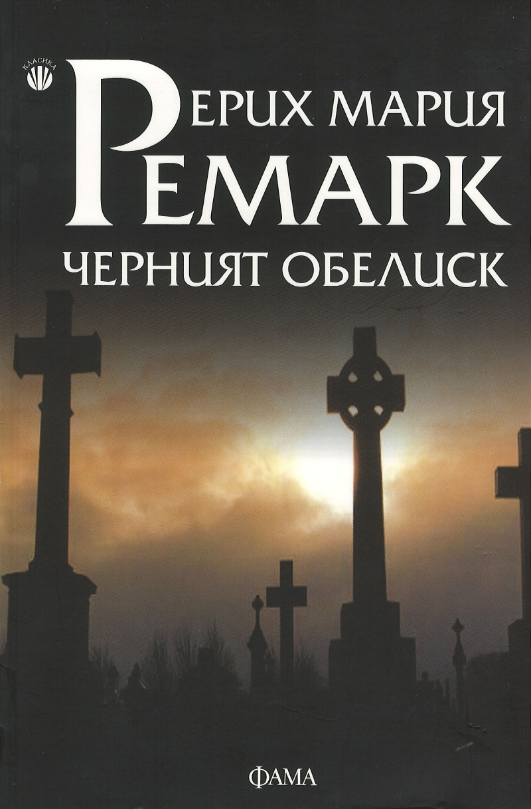

Има едни книги, с които правим първите си срещи малко по задължение. Говоря за онези заглавия от списъците за лятното четене,
допълнителната литература, която университетските преподаватели са така добри да ни предложат,
книгите, с които да упражняваме езика, който учим. Често се съмняваме, че ще ни харесат, но пък
обичаме онова приятно чувство, когато хванем такава книга и в края ѝ въздъхваме: “Точно от това
имах нужда. Трябваше по-рано да я прочета”. Та така и аз – малко произволно се спрях на „Черният
обелиск“ от Ерих Мария Ремарк, защото е необходим за университетските ми дела, а сега искам да
бягам по улиците с плакат “Ремарк е №1” и да крещя, колко велика е тази книга. Вместо това, реших
да бъда по-цивилизована и просто напиша няколко реда.
Лудвиг е ветеран от Първата световна война. Той е на двадесет и пет, живее в малък град и продава надгробни плочи, членува
в клуба на поетите, както и в певческото дружество, ходи да свири на орган в санаториума за хора
с душевни тревоги, пие житена ракия, пие и вино в “Червената мелница”, а понякога, със своя другар
Георг, ходят да ядосват съдържателя на ресторанта към хотел “Валхала”, Едуард Кноблох, с неизчерпаемия
запас от купони, които имат. Германия е разбита, гладна, болна и саката. Инфлацията расте всеки
ден, както расте и напрежението, породено от надигащия се национализъм. Държавата е изтощена,
а също и немският народ. Хората трябва да се справят все някак – някои изграждат стени от сарказъм,
други се давят в алкохол, трети се отдават на плътските удоволствия, за които днес се плащат
милиони, а няколко дни по-късно – милиарди. И Лудвиг, преждевременно пораснал, заради войната
ограбила младостта му, е в средата на този хаос, борещ се с въпроса: “Какъв е смисълът на живота?”.
Това е един от онези съдбоносни моменти, когато нещо или някой влиза в живота ти, за да ти покаже, че чернилката винаги е
съществувала, но силата е в това да продължиш. Случи се да започна „Черният обелиск“ ” в момент,
когато светът ми рухна. Изгубих. Продължих. Пак изгубих. Отново продължих. Но след толкова много
загуби, започваш да се питаш има ли смисъл. В такива моменти, трудно се фокусираш върху победите
си. Много нездравословно. Не мога да кажа, че думите на Ремарк са ме променили завинаги, защото промяната
изисква време, изисква психическа сила, за да разбиеш стената, която сам си изградил в съзнанието
си, но те бяха онази глътка въздух, която те успокоява, онова вдишване, с което хълцането престава,
и което е така важно за да започнеш да усещаш отново земята под краката си.
Лудвиг ми стана изключително близък, не само, защото съм почти на неговите години. Близки са ми терзанията и въпросите, които
изгарят съзнанието му. Добре познавам онези моменти, когато сам разваляш щастието, което имаш, вместо
да се оставиш на момента.
“Понякога пред мене се открива някаква бездна, която сякаш достига чак до центъра на земята. Какво я изпълва? Копнежът? Отчаянието?
Някакво щастие? Но кое? Умората? Примирението? Смъртта? Защо живея? Да, защо живея?”.
Всеки от нас е бил Лудвиг на ръба на бездната. Някои са били и в нея. Усетих го близък и в друго отношение – музиката. Преди
свирех на китара, но не бях особено добра. Един от страховете ми, свързан с музиката, беше изявата
пред другия. Защото не бях толкова добра, защото правех грешки, защото понякога свирех фалшиво, защото
често си мислех, че всички ми се подиграват, независимо от усилията, които полагам. Когато оставах
насаме с китарата се чувствах по-спокойна, защото го правих за себе си, не беше нужно да покривам
нечии други очаквания. Това е, което и Лудвиг прави: “ …свирех за себе си, някакви неясни фантазии,
колкото можех, с малко настроение и мечтателност и копнеж за неизвестното, за бъдещото, за сбъдновението
и за самия мене; не беше необходимо да свиря особено добре, за да мога да свиря за тия неща. ”
Това, което винаги намирам за изключително силно умение у един автор, е да успее да напише сериозен роман и все пак да има
епизоди, които да те накарат да се засмееш на глас. Ремарк успешно ни описва всекидневието в малкия
град, а хумористичните моменти са толкова много, от всяка среща между Лудвиг, Георг и Едуард, през
опикаващия обелиска Фелдфебел Кнопф, госпожица Рене дьо ла Тур, която умело изкарва “един гръмотевичен
глас в първостепенен прусашки казармен висок тон. “, жриците на любовта, с които Ото Бамбус се среща,
за да може да твори първична лирика, но развръзката е повече от неочаквана. Героите не са перфектни,
имат своите пороци, своите силни и слаби моменти, но са толкова истински, толкова плътни, че сякаш
си бил физически част от тази групичка. Накрая ти е тъжно, все едно всички твои приятели са умрели
и само ти си останал последен. Но продължаваш.
„Черният обелиск“ е една от най-стойностните книги, която се появи в живота ми, без да осъзнавам, че съм имала нужда от нея.
Хареса ми. Времето отделено за нея, не бе просто по задължение, а бе удоволствие, бе тъга, бе смях
и философия. Това бе любов от пръв поглед. Дотолкова станах част от събитията в романа, че сега изпитвам
онази специфична носталгия по моменти, които не си уловил, но ти се иска да си бил там. В съзнанието
си пуша пура и пия житена ракия, докато Лудвиг и Георг обсъждат новото зареждане на надгробни камъни
и това е толкова мил спомен от момент, който никога не е съществувал.